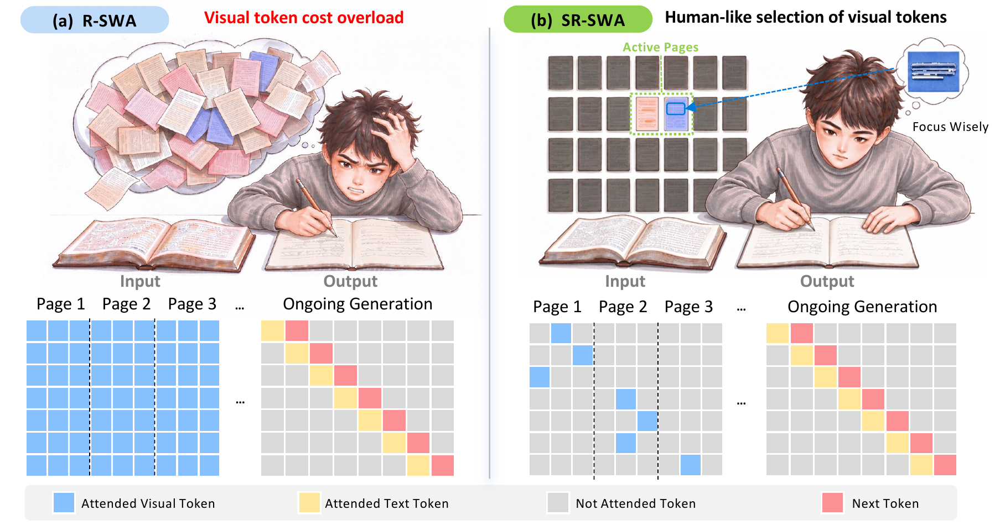
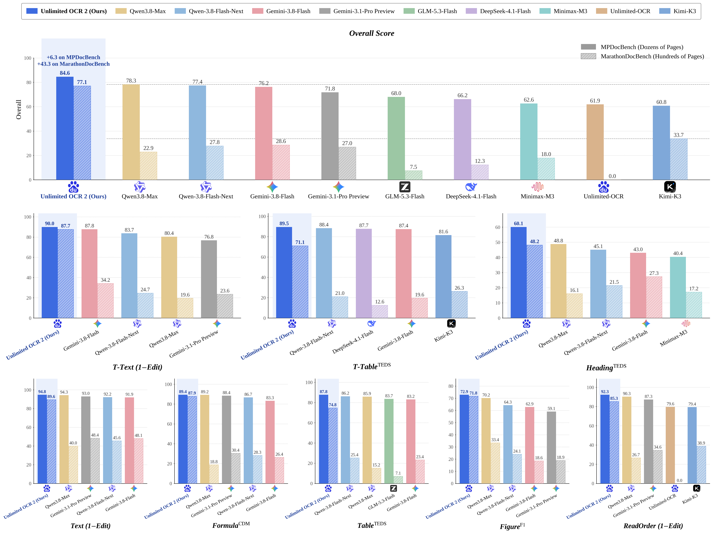

---
<h1 align="center">Unlimited OCR Works 2</h1>
<h3 align="center">Pioneering the OCR-3.0 Era: From Long- to Unlimited-Horizon Parsing.</h3>

Release
- [2026/10/27] 🚀 We release **Unlimited OCR 2**, achieving unlimited-horizon parsing with SR-SWA.
- [2026/07/21] 🤝 Thanks to the ms-swift community for their support, our model now supports training with ms-swift.
- [2026/07/03] 🤝 Thanks to the Baidu Cloud team for their support. Our model is now available on Baidu Cloud.
- [2026/06/28] 🤝 Thanks to the vLLM community and Tianyu Guo for their support, our model now supports vLLM inference.
- [2026/06/24] 🤝 Thanks to AK for creating a demo for us. It is now available at Hugging Face Spaces.
- [2026/06/23] 📄 Our paper is now available on arXiv.
- [2026/06/23] 🤝 Thanks to the ModelScope community for their support. Our model is now available at ModelScope.
- [2026/06/22] 🚀 We present Unlimited-OCR, aiming to push Deepseek-OCR one step further.
What's New in 2
- Sparse Reference Sliding Window Attention (SR-SWA): Compresses text-visual attention interactions from ultra-long sequences down to a fixed-size set of working references (e.g., 512 tokens). This bounds computational complexity, keeping per-step decoding latency and memory footprint nearly constant regardless of document length.
- From Long- to Unlimited-Horizon Parsing: Powered by SR-SWA, Unlimited-OCR 2 achieves true, unbounded document parsing within a finite context window—effectively eliminating quadratic attention scaling and memory bottlenecks as documents grow.
- Ultra-Long Document Parsing SOTA: Achieves state-of-the-art performance across both dozens-of-pages benchmarks (e.g., MPDocBench) and extreme hundred-page benchmarks (e.g., MarathonDocBench).

Inference
Unlimited OCR 2 supports Transformers (native, for quick tests) and SGLang (recommended for serving).
Transformers
Tested with Python 3.10, torch==2.13.0, transformers==4.52.1, huggingface-hub==0.36.0, tokenizers==0.21.4, on an NVIDIA A800-80GB:
shellpip install torch==2.13.0 torchvision pillow transformers==4.52.1 huggingface-hub==0.36.0 \ tokenizers==0.21.4 addict==2.4.0 einops==0.8.2 easydict==1.13
Load the model once:
pythonimport torch from transformers import AutoModel, AutoTokenizer model_name = "baidu/Unlimited-OCR-2" tokenizer = AutoTokenizer.from_pretrained(model_name, trust_remote_code=True) model = AutoModel.from_pretrained(model_name, trust_remote_code=True, use_safetensors=True, torch_dtype=torch.bfloat16).eval().cuda()
Multi-page inference (infer_multi). All pages of a document are parsed in one request, so the model can use cross-page context. Pass the page images in page order:
pythonpages = [f"your_doc/page_{i}.jpg" for i in range(1, 8)] text, num_tokens = model.infer_multi(tokenizer, image_files=pages, output_path="output/multi", save_results=True)
The prompt is built automatically as "<image>" * num_pages + "Multi page parsing.", and each page is encoded as one global view (base mode). The output contains one ` per input page, in the same order as image_files`.
Single-page inference (infer). A single page is encoded with dynamic tiling (gundam mode) by default:
pythontext = model.infer(tokenizer, image_file="your_doc/page_1.jpg", output_path="output/single", save_results=True)
SGLang
Set up the environment (uv-managed virtualenv, Python 3.10) and install the customized SGLang wheel sglang-0.5.20.dev10+g8d62f5fb9c-py3-none-any.whl, plus PyMuPDF for PDF-to-image conversion:
shelluv venv --python 3.10 source .venv/bin/activate uv pip install wheel/sglang-0.5.20.dev10+g8d62f5fb9c-py3-none-any.whl uv pip install pymupdf==1.27.2.2 uv pip install fastokens==0.3.2
Start the SGLang server:
shell# Page-window scheduling for very long documents (the KV tail of the previous window is reused). export SGLANG_UOCR_EANABLE_DOC_LIMIT=1 # 1 = enable, 0 = whole document in one window export SGLANG_UOCR_DOC_GUNDAM_PAGE_WINDOW=10 # pages per window (gundam mode) export SGLANG_UOCR_DOC_BASE_PAGE_WINDOW=10 # pages per window (base mode) export SGLANG_UOCR_MAX_PAGE_TOKENS=20000 # per-page output cap; must be > 0 # Chunk cap for the SAM attention bias. The built-in default (512) allows a single # ~462 MiB allocation and can OOM; 64 is equivalent with a lower peak. export SGLANG_OPT_UOCR_SAM_REL_POS_BIAS_MB=64 # Pass large crop tensors through /dev/shm instead of pickling them into the # tokenizer -> scheduler frame. export SGLANG_UOCR_SHM_WRAP_MODEL_DATA=1 export SGLANG_UOCR_SHM_WRAP_MIN_MB=1 export SGLANG_VLM_CACHE_SIZE_MB=0 # Reduces fragmentation failures on the large contiguous allocations. export PYTORCH_CUDA_ALLOC_CONF=expandable_segments:True python -m sglang.launch_server \ --model-path baidu/Unlimited-OCR-2 \ --served-model-name Unlimited-OCR-2 \ --chat-template unlimited-ocr \ --tokenizer-backend fastokens \ --tokenizer-worker-num 8 \ --mem-fraction-static 0.7 \ --max-running-requests 64 \ --max-prefill-tokens 2048 \ --enable-custom-logit-processor \ --enable-streaming-session \ --allow-auto-truncate \ --disable-radix-cache \ --mm-preprocess-cache-size-mb 0 \ --cuda-graph-backend-decode full --cuda-graph-max-bs-decode 64 \ --cuda-graph-backend-prefill full \ --cuda-graph-max-bs-prefill 16384 \ --cuda-graph-bs-prefill 1024 2048 \ --cuda-graph-config '{"prefill": {"backend": "full", "full_prefill_max_req": 64}}' \ --host 0.0.0.0 \ --port 10000
Notes on the knobs that matter for memory:
--mem-fraction-staticis the share reserved for weights + KV.0.75leaves too little headroom at 32+ concurrent requests;0.7is stable.--max-prefill-tokensdrives a temporary tensor of roughly[tokens, context/32], so memory grows linearly with it:4096 -> 2048halves that peak.- The largest
--cuda-graph-bs-prefillbucket must equal--max-prefill-tokens. A smaller one makes oversized batches fall back to eager; a larger one is never used and only wastes capture memory. --cuda-graph-config'sfull_prefill_max_reqis the request-slot count for the full-prefill CUDA graph. The default (8) makes 16/32 concurrency fall back to eager.- A smaller page window lowers peak memory but hurts cross-page merging, since blocks that continue across a window boundary lose their context.
To parse a whole document in one window instead (SGLANG_UOCR_EANABLE_DOC_LIMIT=0).
Send requests to the OpenAI-compatible API:
pythonimport base64 import json import os import tempfile import fitz import requests from sglang.srt.sampling.custom_logit_processor import DeepseekOCRNoRepeatNGramLogitProcessor server_url = "http://127.0.0.1:10000" NGRAM_PROCESSOR = DeepseekOCRNoRepeatNGramLogitProcessor.to_str() session = requests.Session() session.trust_env = False def pdf_to_images(pdf_path, dpi=300): doc = fitz.open(pdf_path) tmp_dir = tempfile.mkdtemp(prefix="pdf_ocr_") mat = fitz.Matrix(dpi / 72, dpi / 72) image_paths = [] for i, page in enumerate(doc): image_path = os.path.join(tmp_dir, f"page_{i + 1:04d}.png") page.get_pixmap(matrix=mat).save(image_path) image_paths.append(image_path) doc.close() return image_paths def encode_image(image_path): ext = os.path.splitext(image_path)[1].lower() mime = "image/jpeg" if ext in (".jpg", ".jpeg") else f"image/{ext.lstrip('.')}" with open(image_path, "rb") as f: data = base64.b64encode(f.read()).decode("utf-8") return {"type": "image_url", "image_url": {"url": f"data:{mime};base64,{data}"}} def build_content(image_paths): prompt = "<image>" * len(image_paths) + "Multi page parsing." return [encode_image(path) for path in image_paths] + [{"type": "text", "text": prompt}] def generate(image_paths, crop_mode=True, tokens_per_page=8000): # A wider n-gram window for multi-page documents, as in our evaluation setup. window_size = 1024 if len(image_paths) > 1 else 128 payload = { "model": "Unlimited-OCR-2", "messages": [{"role": "user", "content": build_content(image_paths)}], # Must be positive: it is the global output budget for the whole document. "max_tokens": tokens_per_page * len(image_paths), "temperature": 0, "skip_special_tokens": False, "images_config": {"crop_mode": crop_mode}, # True = gundam (tiles), False = base "custom_logit_processor": NGRAM_PROCESSOR, "custom_params": { "ngram_size": 35, "window_size": window_size, "page_token_id": 128827, # marker id (= sparse_attention_config.page_token_id) "eos_token_id": 1, # = eos_token_id in config.json "max_page_tokens": 20000, # per-page output cap, <= 0 disables the page guard }, "stream": True, } response = session.post( f"{server_url}/v1/chat/completions", headers={"Content-Type": "application/json"}, data=json.dumps(payload), timeout=6000, stream=True, ) response.raise_for_status() chunks = [] for line in response.iter_lines(decode_unicode=True): if not line or not line.startswith("data:"): continue data = line[len("data:"):].strip() if data == "[DONE]": break event = json.loads(data) choices = event.get("choices") or [] # the final chunk carries usage only if not choices: continue delta = (choices[0].get("delta") or {}).get("content") or "" if delta: print(delta, end="", flush=True) chunks.append(delta) return "".join(chunks) # Multi page: all pages of a document, parsed in one request pages = [f"your_doc/page_{i}.jpg" for i in range(1, 8)] generate(pages) # Single page generate(["your_doc/page_1.jpg"]) # PDF generate(pdf_to_images("your_doc.pdf", dpi=300))
Evaluation
infer.py is the batch client we use for MPDocBench / MarathonDocBench: it sends each document to the SGLang server above as a single request and saves the raw output, which utils/process_unlimitedOCR2.py then converts to the evaluation Markdown.
shellpython infer.py --url 127.0.0.1:10000 --benchmark MPDocBench \ --dataset-root /path/to/MPDocBench --all --raw-dir raw --concurrency 4 python utils/process_unlimitedOCR2.py --infer-dir raw --out-dir pred
See utils/README.md for the output format, the merging rules and the post-processing details.
Visualization
Unlimited-horizon parsing in action: a full-length book parsed in a single request (replay).

Acknowledgement
We would like to thank Deepseek-OCR, Deepseek-OCR-2, PaddleOCR for their valuable models and ideas, and SGLang for the serving framework.
Citation
bibtex@misc{yin2026unlimitedocrworks, title={Unlimited OCR Works}, author={Youyang Yin and Huanhuan Liu and YY and Qunyi Xie and Chaorun Liu and Shiqi Yang and Shaohua Wang and Zhanlong Liu and Hao Zou and Jinyue Chen and Shu Wei and Jingjing Wu and Mingxin Huang and Zhen Wu and Guibin Wang and Tengyu Du and Lei Jia}, year={2026}, eprint={2606.23050}, archivePrefix={arXiv}, primaryClass={cs.CV}, url={https://arxiv.org/abs/2606.23050}, }